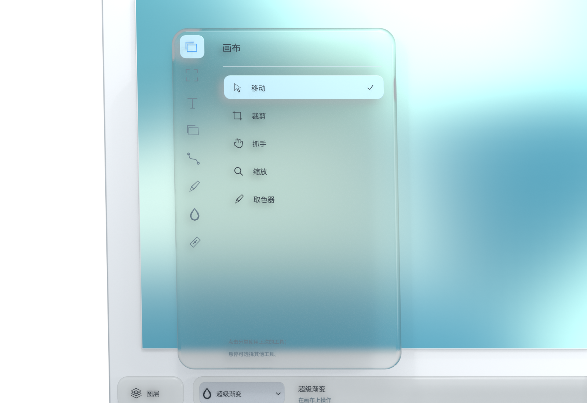
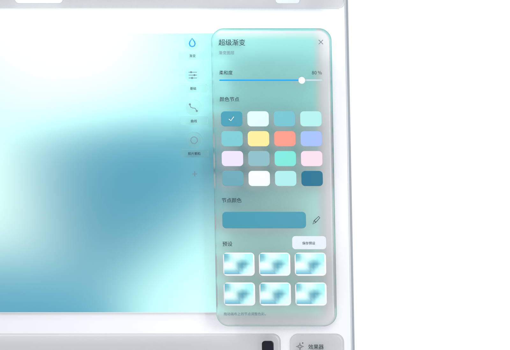
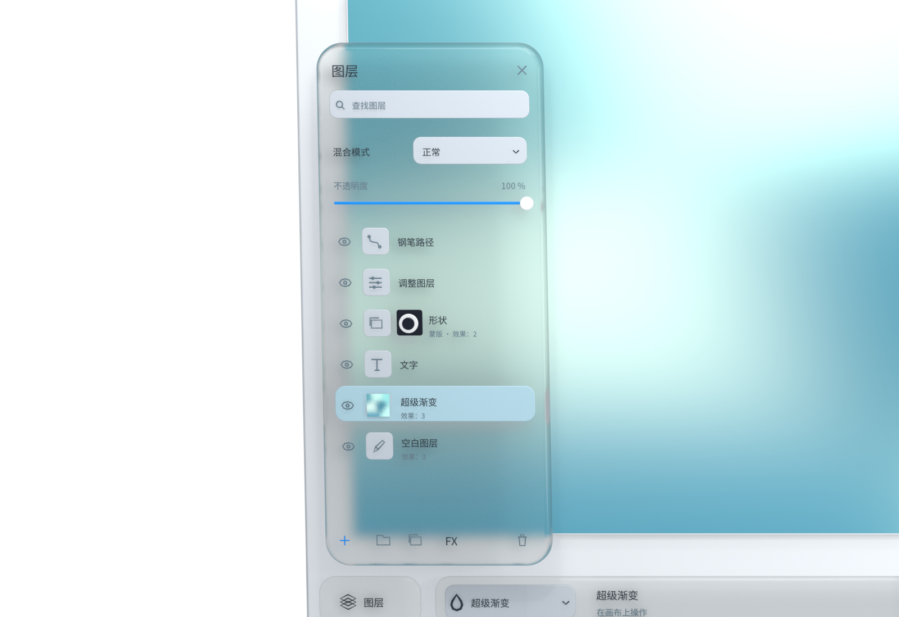
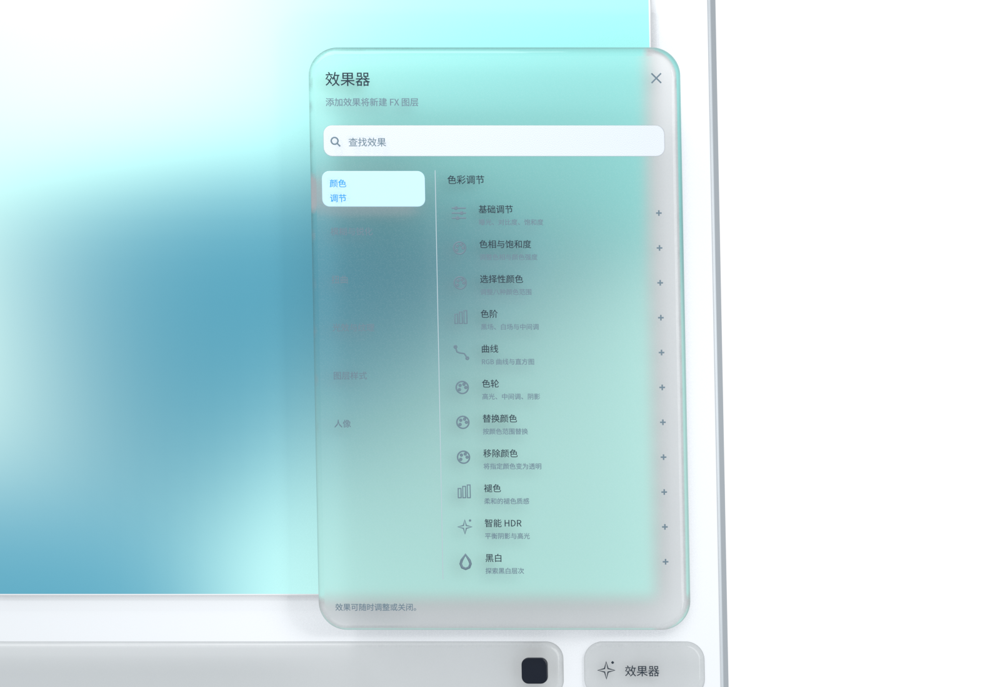
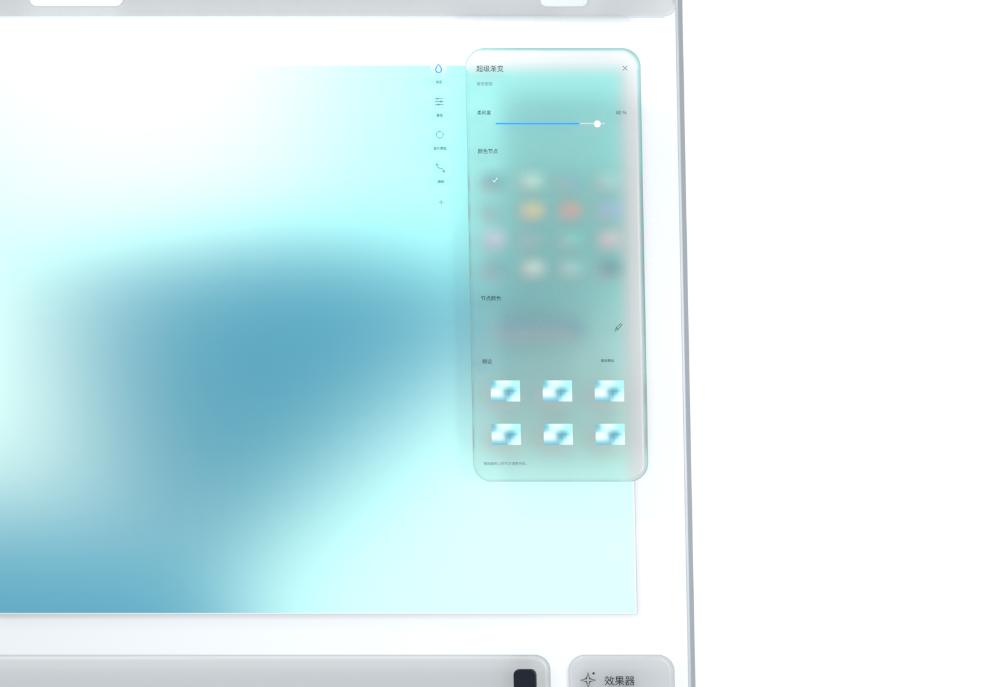

顺手的工具
顺着直觉，开始创作。
从移动、裁切到画笔与路径，工具按创作任务归在一起。展开菜单，选一个合适的工具，就从眼前这一笔开始。


从一个念头，到一种表达。
向下探索 ↓iMage Pro
不必先想清楚每一步。先画下那一笔，再跟着感觉去探索。简单的开始，也能长成丰富的作品。
沿着想法，向下探索。
顺手的工具
从移动、裁切到画笔与路径，工具按创作任务归在一起。展开菜单，选一个合适的工具，就从眼前这一笔开始。

流动的色彩
拖动超级渐变的节点，探索颜色之间的流动。喜欢的组合可以保存为预设，下一次灵感到来时，接着创作。

自由的图层
用图层组织画面，用蒙版探索变化。尝试另一种表达，再回到喜欢的版本，创作可以多一点自由。

可叠加的效果
从色彩调整到光效与纹理，按分类找到你想要的变化。叠加、尝试，再慢慢找到属于你的表达。

可改变的顺序
效果器按先后顺序处理画面。拖动它们重新排列，用同一组效果探索不同结果，让顺序也成为创作的一部分。

只在本机
图片与项目在本机处理。无需账号，没有广告追踪或使用分析，也不会自动上传你的创作内容。
阅读完整隐私说明 ↗每个人都可以创作
免费使用，代码采用 Apache-2.0 开源许可证。你可以阅读、修改和参与改进；第三方组件与品牌素材适用各自条款。
GitHub ↗中文 · ENGLISH · 日本語 · 한국어
支持简体中文、English、한국어、日本語。你可以在应用设置中切换界面语言。
作品展示 · 作者署名 · 电子入选卡
开始你的下一次灵感
免费使用。无需账号。
下载 Mac 预览版Apple Silicon · macOS 14+。预览版尚未通过 Apple 公证；安装说明见发布页。 GitHub Releases ↗